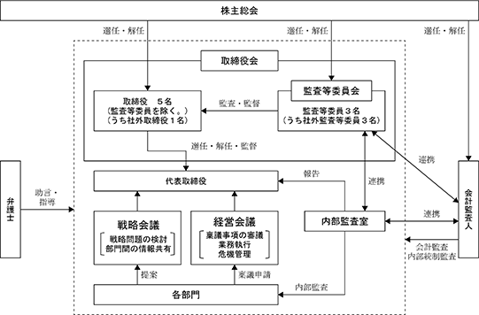

該当事項はありません。
該当事項はありません。
③ 【その他の新株予約権等の状況】
該当事項はありません。
該当事項はありません。
(注) 2018年５月17日開催の第67回定時株主総会決議により、2018年８月21日付で普通株式２株を普通株式１株に併合いたしました。これにより、当社発行済株式総数は5,586,150株減少し、5,586,150株となっております。
2024年２月20日現在
(注) 自己株式200,192株は、「個人その他」に2,001単元、「単元未満株式の状況」に92株含まれております。
2024年２月20日現在
2024年２月20日現在
(注) 「単元未満株式」欄の普通株式には、当社所有の自己株式92株が含まれております。
2024年２月20日現在
該当事項はありません。
該当事項はありません。
該当事項はありません。
(注) 当期間における保有自己株式には、2024年４月21日から有価証券報告書提出日までの単元未満株式の買取による株式数は含めておりません。
当社は、株主の皆さまに対する利益還元を経営の最重要施策の一つとして位置づけ、経営基盤の強化と安定的かつ継続的な配当の実施を基本方針としております。また、当社の剰余金の配当は、年１回の期末配当を基本方針としております。
内部留保金につきましては、今後予想される経営環境の変化に対応するべく、店舗の新設や既存店の活性化のための改装、システム投資などに有効に活用し、売上・利益の拡大を図ってまいります。
これらの方針に基づき、当事業年度の期末配当金につきましては、従来予想していた１株当たり20円の普通配当に当社の業績や物価高等の社会情勢を踏まえた特別配当10円を加え、１株当たり30円の配当としております。
また、当社は、剰余金の配当等会社法第459条第１項各号に定める事項については、法令に別段の定めのある場合を除き、取締役会の決議によって定めることができる旨を定款に定めておりますが、期末配当につきましては、原則株主総会にお諮りし、決定することとしております。
(注) 基準日が当事業年度に属する剰余金の配当は、以下のとおりであります。
① コーポレート・ガバナンスに関する基本的な考え方
当社は、健全な企業活動を確保するためにコンプライアンスを徹底し、経営の透明性と効率性を高め、お客様、お取引先、株主、社員、地域社会等、様々なステークホルダーと良好な関係を構築して、企業価値の最大化を目指します。そのために、コーポレート・ガバナンスの体制強化に引き続き努めてまいります。
(取締役会)
取締役会は、本有価証券報告書提出日現在取締役（監査等委員である取締役を除く。）５名（うち社外取締役１名）（関口忠弘、長谷川義仁、土田一聡、銅島賢、釘島伸博）、監査等委員である取締役（高木宏、原口博、渡辺紀幸）で構成し、経営の意思決定を機動的かつ円滑に行うとともに、取締役間の職務遂行を牽制して、適切な経営管理が行われる体制としております。当事業年度においては計14回開催しております。
(監査等委員会)
監査等委員会は、本有価証券報告書提出日現在３名（うち社外取締役３名）で構成し、必要に応じて開催しております。監査等委員である取締役は、取締役会他重要な会議に出席して、取締役（監査等委員である取締役を除く。）の職務執行を監視しております。監査等委員会は、必要に応じて毎月１回程度開催しております。
(内部監査室)
内部監査室(１名)は、社長直轄組織であり、会社の業務活動が適正かつ合理的に行われているか監査を行うとともに、不正過誤を防止し、業務の改善・指導に努めております。
その他の会議体として、「経営会議」(原則週１回)、「戦略会議」(原則週１回)をそれぞれ開催しております。
「経営会議」は、代表取締役社長 関口 忠弘 が議長を務めております。その他のメンバーは専務取締役 長谷川 義仁、取締役 土田 一聡、取締役 銅島 賢の取締役４名の他、各部門の責任者出席のもとに開催し、稟議・承認事項等の社内意思決定及び業務執行の意思統一を図っております。
「戦略会議」は、議題に応じてメンバーを招集し、各部門にまたがる戦略問題の検討及び議論を行っております。
当社は、監査等委員会設置会社であるとともに、「取締役（監査等委員であるものを除く。）の任期１年」「執行役員制度」「業務執行役員及び執行役員の担当制」を採用し、独立性が高い社外取締役を４名（うち監査等委員である取締役３名）を株主総会で選任しております。その結果、業務執行機能が分離された取締役会は、少数の取締役での運営となり、戦略的意思決定とコンプライアンスの強化が図れるとともに、経営環境の急激な変化に対応できる体制が構築されていると判断するため、現在の体制を採用しております。

イ 内部統制システムの整備の状況
ａ 取締役及び使用人の職務の執行が法令及び定款に適合することを確保するための体制
当社は、コンプライアンス体制に係わる規程を整備し、法令及び定款・社内規程を遵守するとともに、業務分掌の明確化と権限行使の適正化を図っております。また、社外取締役を選任することにより、客観的、中立的な経営監視の機能の充実に努めております。
法的判断を要する案件については、速やかに顧問弁護士等に相談し、法令を逸脱しない体制を整備しております。また、コンプライアンス体制を推進するために、内部通報制度を構築し、通報窓口を社内及び社外に設置して匿名での通報を受けるとともに、通報者に対する不利益取扱いの防止を保証しております。
ｂ 取締役の職務執行に係る情報の保存及び管理に関する体制
取締役の職務執行に係る情報については、文書管理規程に基づき適切に検索が容易な状態で保存・管理するとともに、文書種別に保存期間を定め、期間中は閲覧可能な状態を維持しております。
ｃ 損失の危険の管理に関する規程その他の体制
組織横断的リスクの監視及び全社的対応は管理部が行い、各部門の所管業務に付随する潜在的リスクの管理は当該部門が行います。不測の事態が発生した場合は、代表取締役指揮下に対策本部を設置し、迅速かつ的確な対応を行うことで、損失の拡大を防止する体制を整えております。
ｄ 取締役の職務の執行が効率的に行われることを確保するための体制
当社は、取締役の職務権限、会議体の開催や付議基準等を明確化するとともに、意思決定の妥当性を高めるためのプロセス・体制を確保しております。また、取締役会を月１回定時に開催するほか、必要に応じて適宜臨時に開催するものとし、経営に関する重要事項についての審議、議決及び取締役の業務執行状況の監督等を行っております。
ｅ 監査等委員会がその職務を補助すべき使用人を置くことを求めた場合における当該使用人に関する事項及び当該使用人の監査等委員以外の取締役からの独立性に関する事項並びに当該使用人に対する指示の実効性の確保に関する事項
当社は、現在監査等委員会の職務を補助する使用人は配置しておりませんが、監査等委員会から求められた場合は監査等委員会と協議のうえ、合理的な範囲で配置することとしております。その場合、補助業務にあたる使用人は、監査等委員会の指示命令に従い職務を行うこととしております。また、当該使用人の任命・異動等を行う場合は、監査等委員会に事前の同意を得ることにより、取締役からの独立性を確保してまいります。
ｆ 取締役及び使用人が監査等委員会に報告をするための体制その他の監査等委員会への報告に関する体制
監査等委員は、取締役会等の重要な会議に出席し、取締役及び使用人から職務執行状況の報告を受けるほか、稟議書等の重要な書類を閲覧し、必要に応じて取締役及び使用人に、その説明を求めております。また、内部監査室から、定期的に内部監査状況が報告されております。その他、監査等委員会監査のために求められた報告事項について、速やかに対応する体制を整備しております。
ｇ 監査等委員会に報告した者が当該報告をしたことを理由として不利な取扱いを受けないことを確保するための体制
当社の役員・使用人に対し、監査等委員会に報告したことを理由として不利な取扱いを行うことを禁止し、その旨を当社の役員・使用人に周知徹底しております。
ｈ 監査等委員会の職務の執行について生ずる費用の前払または償還の手続きその他の当該職務の執行について生ずる費用または債務の処理に係る方針に関する事項
監査等委員会が職務の執行について、当社に対し費用の前払等の請求をしたときは、当該費用等が監査等委員会の職務の執行に必要でないことを証明した場合を除き、速やかに支払等の処理を行うこととしております。
ｉ その他の監査等委員会の監査が実効的に行われることを確保するための体制
監査等委員会は、監査等委員会規則に基づく独立性と権限により、監査の実効性を確保するとともに、内部監査室及び会計監査人と緊密な連携を保ちながら、自らの監査成果の達成を図っております。
ｊ 反社会的勢力排除に向けた整備状況
当社は、反社会的勢力との関係遮断を企業行動基準に明記し、法令、社会的規範及び企業倫理に反した事業活動は行わないこととしております。また、内部通報制度を適切に運用し、反社会的勢力の潜在的関与を排除しております。
当社は、群馬県企業防衛対策協議会に加盟し、その他所轄警察署及び株主名簿管理人から関連情報を収集し、不測の事態に備えて最新の動向を把握するよう努めております。また、これらの勢力に対する対応は、管理部が総括し、必要に応じて外部機関と連携して対処することとしております。
当社の取締役（監査等委員であるものを除く。）は３名以上10名以内、監査等委員である取締役は４名以内とする旨を定款で定めております。
当社は、取締役の選任決議は、監査等委員である取締役とそれ以外の取締役を区分して、議決権を行使することができる株主の議決権の３分の１以上を有する株主が出席し、その議決権の過半数をもって行う旨及び取締役の選任決議は累積投票によらないものとする旨定款に定めております。
a 自己株式の取得の決定機関
当社は、自己株式の取得について、経済情勢の変化に対応して財務政策等の経営諸施策を機動的に遂行することを可能とするため、会社法第165条第２項の規定に基づき、取締役会の決議によって市場取引等により自己の株式を取得することができる旨を定款で定めております。
b 剰余金の配当等
当社は、株主への機動的な利益還元を行うことを可能にするため、剰余金の配当等に係る会社法第459条第1項各号に定める事項については、法令に別段の定めのある場合を除き、株主総会の決議によらず取締役会決議により定めることができる旨を定款で定めております。
また、剰余金の配当の基準日について、期末配当は毎年２月20日、中間配当は毎年８月20日、その他は基準日を定めて剰余金の配当をすることができる旨を定款で定めております。
当社は、株主総会の特別決議事項の審議を円滑に行うことを目的として、会社法第309条第２項に定める決議は、議決権を行使することができる株主の議決権の３分の１以上を有する株主が出席し、その議決権の３分の２以上をもって行う旨定款に定めております。
へ 責任限定契約の内容の概要
当社と社外取締役は、会社法第427条第１項の規定に基づき、同法第423条第１項の損害賠償責任を限定する契約を締結しております。当該契約に基づく損害賠償責任の限度額は、法令に定める最低責任限度額としております。なお、当該責任限定が認められるのは、当該社外取締役が責任の原因となった職務の遂行について善意かつ重大な過失がない等法令に定める要件に該当するときに限られます。
ト 役員等賠償責任保険（Ｄ＆Ｏ保険）契約の内容の概要
当社は保険会社との間で、会社法第430条の３第１項に規定する役員等賠償責任保険契約を締結しております。当社の取締役を被保険者とし、これらの役職の立場で行なった行為による損害賠償金及び争訟費用等を補填することとしております。ただし、当該保険契約においては法令に違反することを認識しながら行った行為に起因する損害は補填されないなど、一定の免責事由を定めることにより、役員等の職務執行の適正性が損なわれないように措置を講じております。保険料は当社が全額負担しております。
男性
(注) １ 2022年５月11日開催の定時株主総会において定款の変更が決議されたことにより、当社は同日付をもって監査等委員会設置会社へ移行しております。
２ 取締役釘島伸博、高木宏、原口博及び渡辺紀幸の各氏は、社外取締役であります。
３ 2024年２月期に係る定時株主総会終結の時から2025年２月期に係る定時株主総会終結の時までであります。
４ 2024年２月期に係る定時株主総会終結の時から2026年２月期に係る定時株主総会終結の時までであります。
当社の社外取締役は４名(うち監査等委員である取締役は３名)であります。
社外取締役 釘島 伸博氏は、弁護士であり、主に経験豊富な法律の専門家としての視点から、当社経営陣の業務執行に関する適切な助言を行うこと等により、経営に対する監督機能を果たしております。なお、同氏の兼職先である弁護士法人釘島総合法律事務所は当社と顧問契約を結んでおり、当事業年度において、当社は顧問弁護士報酬等として1,200千円を支払っておりますが、その他特別な利害関係はありません。
３名の監査等委員である社外取締役について、高木 宏氏は、警察行政の豊富な経験・実績からリスクマネジメント及び組織管理に関する相当程度の知見を有しております。原口 博氏は、公認会計士として財務及び会計に関する相当程度の知見を有しております。渡辺 紀幸氏は、企業経営と金融機関での経験・実績から財務及び金融に関する相当程度の知見を有しております。なお、渡辺紀幸氏の兼職先であり代表取締役である株式会社群銀カードとはクレジットカード決済等について取引関係にあります。その他の社外取締役については、当社との間には、人的関係、資本関係、取引関係、その他の利害関係はありません。
社外取締役を選任するための独立性に関する基準または方針等は明確に定めておりませんが、選任にあたっては、一般株主と利益相反が生じるおそれのないことを基本的な考えとしており、株式会社東京証券取引所が定める独立役員の独立性に関する判断基準等を参考にしております。
社外取締役は当社株式を保有しておりません。
なお、当社は、2006年５月17日開催の第55回定時株主総会で定款を変更し、社外取締役の責任限定に関する規程を設けております。当該定款に基づき当社は、社外取締役釘島伸博氏、及び監査等委員である社外取締役高木宏、原口博、渡辺紀幸の３氏と会社法第423条第１項の損害賠償責任について、職務を行うにつき善意でかつ重大な過失がないときは、会社法第425条第１項各号の額の合計額とする契約を締結しております。
当社の社外取締役は、取締役会等の重要な会議に出席し、また稟議書等の重要な書類を閲覧するなど、それぞれの専門的見地から経営を監督し、企業としての健全性及び透明性を確保しております。
また、監査法人と定期的に会合を開催し、決算監査実施状況や今後の監査課題等について意見交換を行っております。また、内部監査室とは、定期的に会合を行い、内部監査状況の報告に加え、全社的に重大な影響が懸念される事項が存在する場合に、その状況報告及び改善に向けた対応策を検討しております。
当事業年度において当社は取締役会を14回開催しており、個々の取締役の出席状況については次のとおりであります。
(注) 霜鳥 守雅氏は2024年１月15日をもって、取締役執行役員管理部長を辞任しておりますので、退任までの期間に開催された取締役会の出席状況を記載しております。
取締役会における主な検討内容として、決算に関する事項、株主総会に関する事項、人事・組織に関する事項、内部統制に関する事項、予算に関する事項、重要な投資(出店、テナント誘致等)に関する事項などが挙げられます。
(3) 【監査の状況】
① 監査等委員会監査の状況
当社は、2022年５月11日開催の定時株主総会の決議によって、監査役会設置会社から監査等委員会設置会社へ移行いたしました。
当社における監査等委員会は、本有価証券報告書提出日現在監査等委員である取締役３名（うち社外取締役３名）で構成し、必要に応じて毎月１回程度開催しております。監査等委員である取締役は、取締役会他重要な会議に出席して、取締役（監査等委員である取締役を除く。）の職務執行を監視しております。
監査等委員である社外取締役２名(高木宏氏、原口博氏)を東京証券取引所に対して、独立役員として届け出ております。当事業年度末日現在の監査等委員は３名（うち社外取締役３名）であります。
なお、常勤監査等委員である高木宏氏は、主に危機管理の専門的知見を有しております。原口博氏は、公認会計士であり、財務及び会計に関する相当程度の知見を有しております。渡辺紀幸氏は、大手金融機関に長年勤務し、金融・総務・人事の分野において高い知見を有しております。
当事業年度において当社は、監査等委員会を15回開催しており、個々の監査等委員会の出席状況については、次のとおりであります。
(注) 渡辺 紀幸氏は2023年５月18日開催の定時取締役会で新たに監査等委員に選任されましたので、就任後の出席状況を記載しております。
監査等委員会における主な検討事項として、監査等委員の任務分担、監査方針・監査計画の策定、会計監査人の監査品質・監査体制の評価及び監査報酬への同意、取締役会の職務執行状況の確認、内部統制システムの整備・運用状況、事業展開におけるコンプライアンス・リスク管理体制の評価などが挙げられます。
なお、監査等委員会は、会計監査人からの監査計画の説明を受け、事業所往査に立ち会うとともに、監査結果の報告を受けるなどの情報交換を行っております。
また、常勤監査等委員は、監査計画に基づき各部門への往査、担当者へのヒアリング等を行い、非常勤監査等委員とも情報共有を行いながら監査を実施しております。
さらに、内部監査室とは、業務の適正性や法令への適合性を徹底するために情報を共有し、相互連携を図っております。
② 内部監査の状況
当社は、内部監査規程に基づき、代表取締役直轄の内部監査室（１名）を設置しております。
内部監査担当者は、監査計画に基づき、事業所への往査を行い、法令、規程への適合状況及び業務活動が正しく行われているかなどの監査を実施し、監査結果を代表取締役へ報告するとともに、監査等委員にも内容や情報の報告を行っております。これに加え、内部監査室は、年度の内部監査の結果を取締役会でも直接報告しております。また、内部監査室は、会計監査人の事業所往査等に参加し、監査等委員とともに、情報を共有しながら連携して監査を行っております。
a.監査法人の名称
有限責任監査法人トーマツ
b.継続監査期間
1994年以降
(注)上記記載の期間は、調査が著しく困難であったため、当社が株式上場した以後の期間について調査した結果について記載したものであり、継続監査期間はこの期間を超える可能性があります。
c.業務を執行した公認会計士の氏名
指定有限責任社員・業務執行社員 小堀 一英氏
指定有限責任社員・業務執行社員 張本 青波氏
d.監査業務に係る補助者の構成
当社の会計監査業務に係る補助者は、公認会計士４名、その他18名であります。
e.監査法人の選定方法と理由
当社は、会計監査人の適否について検討し、独立性、監査品質等の観点から、有限責任監査法人トーマツが当社の会計監査人として適任であると判断しております。
なお、監査等委員会は、会計監査人の職務の執行に支障がある場合等その必要があると判断した場合は、株主総会に提出する会計監査人の解任又は不再任に関する議案の内容を決定いたします。また、監査等委員会は、会計監査人が会社法第340条第１項各号に定める項目に該当すると認められる場合は、監査等委員全員の同意に基づき監査等委員会が会計監査人を解任いたします。
f.監査等委員及び監査等委員会による監査法人の評価
当社の監査等委員及び監査等委員会は、会計監査人に対して評価を行っております。この評価に関して、会計監査人が独立の立場を保持し、かつ、適正な監査を実施しているかを監視及び検証するとともに、会計監査人からその職務の執行状況について報告を受け、必要に応じて説明を求めました。その結果、会計監査人の職務執行に問題はないと評価いたしました。
a.監査公認会計士等に対する報酬
b.監査公認会計士等と同一のネットワークに属する組織に対する報酬(a.を除く。)
該当事項はありません。
c.その他の重要な監査証明業務に基づく報酬の内容
該当事項はありません。
d.監査報酬の決定方針
監査報酬の決定にあたっては、監査公認会計士より提示される監査計画の内容に基づき、必要時間数等を協議し、監査等委員会の同意を得た上で決定いたしております。
e.監査等委員会が会計監査人の報酬等に同意した理由
監査等委員会は、会計監査人の監査計画の内容、会計監査の職務遂行状況や報酬見積もりの算出根拠などを確認し、検討した結果、会計監査人の報酬等につき、会社法第399条第１項の同意を行っております。
(4) 【役員の報酬等】
当社は取締役会において、取締役の個人別の報酬等の内容にかかわる決定方針を以下のとおり定めております。
当社の取締役の報酬額は、株主総会で承認された報酬額の範囲内において、業績貢献度、経営状況、経済情勢等を考慮の上、決定しております。取締役の具体的な報酬等の額につきましては、各取締役の職責や成果を熟知している代表取締役社長関口忠弘氏が、取締役会の一任を受け、株主総会で決議された金額の範囲内で決定しております。尚、当社の取締役の報酬等は、固定報酬を原則とし、月毎に支払いをしております。
また、取締役会は、当事業年度に係る取締役(監査等委員である取締役を除く)の個人別報酬額が、代表取締役社長への委任手続きを経て決定されていることから、その内容が決定方針に沿うものであると判断しております。
監査等委員の具体的な報酬等の額につきましては、適切な企業統治を確保するために取締役会からの独立性をもって取締役の職務執行の監査を行うという職責を考慮した報酬とし、株主総会において承認された枠内で、監査等委員間の協議のうえ決定しております。
(注) １ 取締役の報酬額には、使用人兼務取締役の使用人分の給与は含まれておりません。
２ 取締役(監査等委員であるものを除く)の報酬限度額は、2022年５月11日開催の第71回定時株主総会において、年額２億５千万円以内(うち社外取締役１千万円以内)(使用人給与相当額を除く)と決議いただいております。
３ 監査等委員である取締役の報酬限度額は、2022年５月11日開催の第71回定時株主総会において、年額２千万円以内と決議いただいております。
報酬等の総額が１億円以上である者が存在しないため、記載しておりません。
(5) 【株式の保有状況】
当社は、保有目的が純投資目的である投資株式と純投資目的以外の目的である投資株式の区分について、当社の事業との関連性の有無で区分しております。この関連性とは、当社の中長期的な企業価値の向上に資すると期待できること、また、安定的な取引等の関係構築に資することを有するものとし、関連性のないものは純投資目的、関連性のあるものは純投資目的以外の目的で保有すると位置づけております。
当社は、企業価値向上の観点から、業界情報や当社出店地域に関する情報の入手、取引関係の維持・強化の為に資すると判断できる場合に政策的に保有いたします。その他、業界における競合企業の動向を把握することを目的として、必要最低限の投資額にて株式を取得することがあります。そして、個別銘柄ごとに、保有する意義や今後の取引状況、コスト等の採算性についても精査の上、保有の合理性を検証しており、事業環境の変化等によって方針にそぐわない場合は、適宜・適切に売却して縮減することとします。
なお、個別銘柄の保有の適否については、検証した結果を踏まえ、必要に応じて取締役会等において確認しております。
ｂ．銘柄数及び貸借対照表計上額
特定投資株式
(注)特定投資株式における定量的な保有効果については記載が困難であります。保有の合理性は取締役会等にて投資先ごとに保有目的などの定性面に加えて、取引実績、受取配当金及び株式保有コスト等を総合的に検証しております。
③ 保有目的が純投資目的である投資株式
該当事項はありません。
該当はありません。